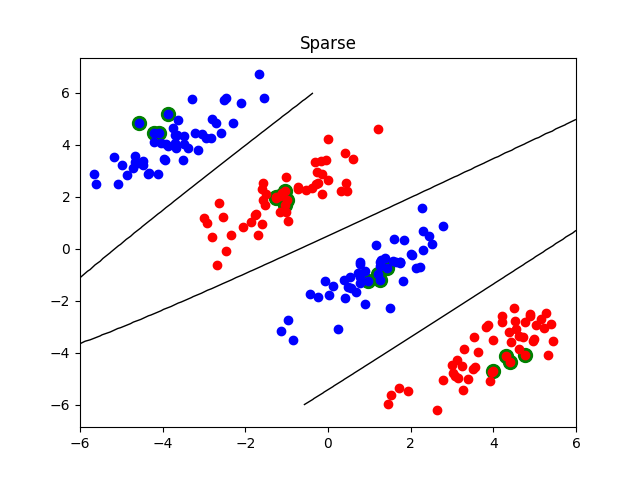
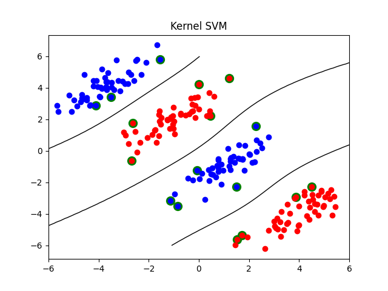

Note
Click here to download the full example code
Sparse non-linear classification¶
This examples demonstrates how to use CDClassifier with L1 penalty to do sparse non-linear classification. The trick simply consists in fitting the classifier with a kernel matrix (e.g., using an RBF kernel).
There are a few interesting differences with standard kernel SVMs:
1. the kernel matrix does not need to be positive semi-definite (hence the expression “kernel matrix” above is an abuse of terminology)
2. the number of “support vectors” will be typically smaller thanks to L1 regularization and can be adjusted by the regularization parameter C (the smaller C, the fewer the support vectors)
the “support vectors” need not be located at the margin
- 
- 
import numpy as np
import pylab as pl
from sklearn.metrics.pairwise import rbf_kernel
from lightning.classification import CDClassifier
from lightning.classification import KernelSVC
np.random.seed(0)
class SparseNonlinearClassifier(CDClassifier):
def __init__(self, gamma=1e-2, C=1, alpha=1):
self.gamma = gamma
super().__init__(C=C,
alpha=alpha,
loss="squared_hinge",
penalty="l1")
def fit(self, X, y):
K = rbf_kernel(X, gamma=self.gamma)
self.X_train_ = X
super().fit(K, y)
return self
def decision_function(self, X):
K = rbf_kernel(X, self.X_train_, gamma=self.gamma)
return super().decision_function(K)
def gen_non_lin_separable_data():
mean1 = [-1, 2]
mean2 = [1, -1]
mean3 = [4, -4]
mean4 = [-4, 4]
cov = [[1.0,0.8], [0.8, 1.0]]
X1 = np.random.multivariate_normal(mean1, cov, 50)
X1 = np.vstack((X1, np.random.multivariate_normal(mean3, cov, 50)))
y1 = np.ones(len(X1))
X2 = np.random.multivariate_normal(mean2, cov, 50)
X2 = np.vstack((X2, np.random.multivariate_normal(mean4, cov, 50)))
y2 = np.ones(len(X2)) * -1
return X1, y1, X2, y2
def plot_contour(X, X1, X2, clf, title):
pl.figure()
pl.title(title)
# Plot instances of class 1.
pl.plot(X1[:,0], X1[:,1], "ro")
# Plot instances of class 2.
pl.plot(X2[:,0], X2[:,1], "bo")
# Select "support vectors".
if hasattr(clf, "support_vectors_"):
sv = clf.support_vectors_
else:
sv = X[clf.coef_.ravel() != 0]
# Plot support vectors.
pl.scatter(sv[:, 0], sv[:, 1], s=100, c="g")
# Plot decision surface.
A, B = np.meshgrid(np.linspace(-6,6,50), np.linspace(-6,6,50))
C = np.array([[x1, x2] for x1, x2 in zip(np.ravel(A), np.ravel(B))])
Z = clf.decision_function(C).reshape(A.shape)
pl.contour(A, B, Z, [0.0], colors='k', linewidths=1, origin='lower')
pl.axis("tight")
# Generate synthetic data from 2 classes.
X1, y1, X2, y2 = gen_non_lin_separable_data()
# Combine them to form a training set.
X = np.vstack((X1, X2))
y = np.hstack((y1, y2))
# Train the classifiers.
clf = SparseNonlinearClassifier(gamma=0.1, alpha=1./0.05)
clf.fit(X, y)
clf2 = KernelSVC(gamma=0.1, kernel="rbf", alpha=1e-2)
clf2.fit(X, y)
# Plot contours.
plot_contour(X, X1, X2, clf, "Sparse")
plot_contour(X, X1, X2, clf2, "Kernel SVM")
pl.show()
Total running time of the script: ( 0 minutes 0.273 seconds)